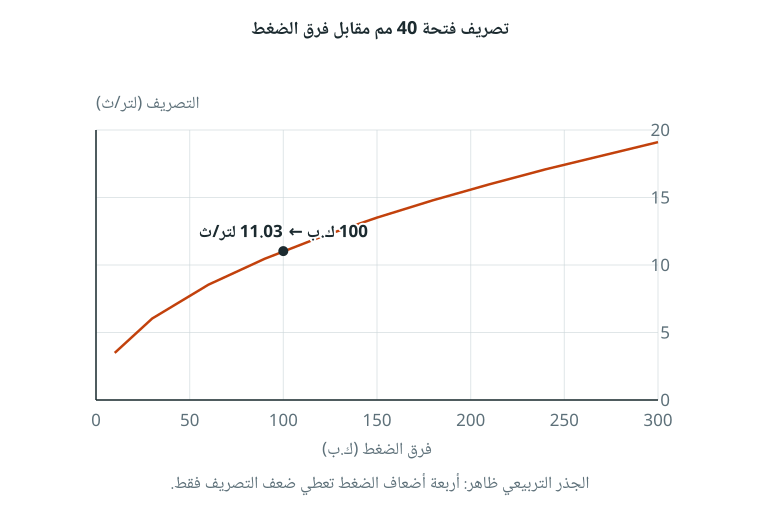

تصريف الفتحة: كيف يقيس فرق الضغط التصريف؟
غيّر قطر الفتحة وفرق الضغط، وتابع السرعة والتصريف على المقياس.
المقياس يبدأ عند فتحة 40 مم وفرق ضغط 100 ك.ب. محاكاة تعليمية لا قياس فيزيائي حقيقي: الأرقام تُحسب من النموذج لحظيًا.
افتراضات النموذج والمصدر
Q = Cd · (π d²/4) · √(2Δp/ρ)
ماء عند 20 °م بكثافة 998 kg/m³
فتحة حادة الحواف بمعامل تصريف 0.62
جريان غير قابل للانضغاط
الضغط المقيس عند الفتحة مباشرة
فتحة حادة من خزان كبير إلى ضغط أقل؛ لا تصحيح لنسبة قطر فتحة قياس داخل أنبوب.
Orifice flow — discharge equation — The Engineering ToolBox
Discharge coefficient of sharp-edged orifices — The Engineering ToolBox
فتحة في مسار مائع تُسرّع الجريان عندها، فينخفض الضغط بحسب برنولي، وفرق الضغط هذا هو ما يُقاس. التصريف = معامل التصريف × مساحة الفتحة × سرعة الجريان، والسرعة تتبع الجذر التربيعي لفرق الضغط.
في الحالة الافتراضية (فتحة 40 مم وفرق 100 ك.ب) تكون السرعة 14.16 م/ث والتصريف 11.03 لتر/ث. لاحظ أن 14 م/ث سرعة عالية جدًّا للماء في خط أنبوب — هذا لأن كل الفرق يُستهلك في فتحة صغيرة. لو كانت هذه فتحة قياس على خط يعمل، لكان فقد الضغط المستمر مكلفًا في طاقة المضخة.
أربعة أضعاف الضغط (من 25 إلى 100 ك.ب) تعطي ضعف التصريف فقط، لأن السرعة تتبع √Δp. هذه هي حساسية اللوحة: حادّة عند التصريفات الصغيرة، بليدة عند الكبيرة.
كيف تعمل الظاهرة؟
المائع يتسارع لدخول الفتحة فيتحوّل ضغطه إلى طاقة حركة، ثم ينتشر بعدها مبدّدًا جزءًا من الطاقة في دوّامات. معامل التصريف Cd يختصر ذلك الجزء المفقود في عدد واحد، ويقارب 0.62 للفتحة حادة الحواف و0.98 للفتحة المصنّعة بانسيابية فوهة.
العلاقة بالأرقام
المعادلة: Q = Cd · (π d²/4) · √(2Δp/ρ). عند قطر الفتحة 40.00 مم، فرق الضغط 100.00 ك.ب، يعطي الحساب: سرعة الجريان في الفتحة = 14.16 م/ث؛ فرق الضغط = 100 ك.ب؛ التصريف = 11.03 لتر/ث. حالة «فرق ضغط مرجعي» (قطر الفتحة 40.00 مم، فرق الضغط 25.00 ك.ب): سرعة الجريان في الفتحة = 7.08 م/ث؛ فرق الضغط = 25 ك.ب؛ التصريف = 5.51 لتر/ث. حالة «أربعة أضعاف الضغط» (قطر الفتحة 40.00 مم، فرق الضغط 100.00 ك.ب): سرعة الجريان في الفتحة = 14.16 م/ث؛ فرق الضغط = 100 ك.ب؛ التصريف = 11.03 لتر/ث. هذه أمثلة مولدة من دالة الحساب نفسها؛ وليست قياسات فعلية أو مواصفات لجهاز تجاري.
مفاهيم متقاربة
يُخلط بين «فرق الضغط عند الفتحة» و«فقد الضغط الدائم في الخط»: الأول هو ما يقيسه المقياس الضوئي، والثاني أكبر منه بثلاثة إلى عشرة أضعاف لأن الدوّامات تبتلع الطاقة ولا تعيدها. ويُخلط بين معامل التصريف ومعامل السرعة: Cd يضمحلّهما معًا.
حدود التطبيق
Cd المعطى ثابت ويفترض رقم رينولدز كبيرًا؛ عند تصريفات صغيرة يتغيّر Cd مع Re ويصبح النموذج تقريبيًّا. لا تصلح المعادلة للغازات عند فروق ضغط نسبية كبيرة (أكبر من 10%) حيث يصير الانضغاط مؤثرًا، ولا للسوائل اللزجة جدًّا حيث يهيمن فقد الاحتكاك.

| الكمية | القيمة | المصدر |
|---|---|---|
| سرعة الجريان في الفتحة — الحالة الافتراضية | 14.16 م/ث | [1] |
| فرق الضغط — الحالة الافتراضية | 100 ك.ب | [1] |
| التصريف — الحالة الافتراضية | 11.03 لتر/ث | [1] |
المصادر
- 1 Orifice flow — discharge equation — The Engineering ToolBox. www.engineeringtoolbox.com/orifice-nozzle-venturi-d_590.html · اطُّلع عليه 2026-11-19
- 2 Discharge coefficient of sharp-edged orifices — The Engineering ToolBox. www.engineeringtoolbox.com/discharge-coefficient-d_1271.html · اطُّلع عليه 2026-11-19
راجعه: عبدالله الهويدي — مراجعة في تطبيق انفراد · 2026-11-19 · آخر تحديث 2026-11-20
رجوع إلى المعمل